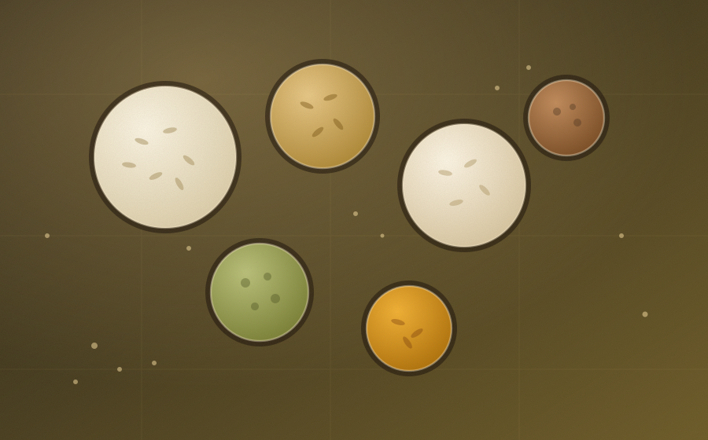

- Raw & parboiled
- Sortex cleaned
- 25 / 50 kg or jumbo bags
- Private label
Rice and grain buyers get caught out by two things: a grade that drifts between sample and shipment, and paperwork that does not satisfy the destination. Both are avoidable.
We fix the specification in writing, draw samples from the actual lot rather than a showroom bag, and prepare the documentation for your customs authority before the vessel sails.
What we supply
Rice
| Type | Common grades | Typical grading points |
|---|---|---|
| Non-basmati long grain | Raw, parboiled, steam | Length, broken %, moisture |
| Sona Masoori | Raw, steam | Broken %, polish, moisture |
| Ponni & IR varieties | Raw, parboiled | Broken %, chalk, admixture |
| Broken rice | 5%, 25%, 100% | Broken size, purity |
Other grains
| Product | Forms available | Typical use |
|---|---|---|
| Maize / corn | Whole, broken | Feed and food grades |
| Sorghum (jowar) | Whole, flour | Food and feed |
| Pearl millet (bajra) | Whole, flour | Food and feed |
| Finger millet (ragi) | Whole, flour | Food |
| Foxtail, kodo, little millet | Whole, polished | Health foods, retail packing |
Not listed? This is what buyers ask us for most often, not a fixed catalogue. If you need something in this category that is not shown, send the specification and we will find a vendor.
Notes on this category
Cleaning & sorting
Sortex colour sorting, de-stoning and grading are standard on export lots. Where you need a tighter broken percentage or a specific polish, say so at enquiry stage and it is quoted in.
Packing
25 kg and 50 kg PP or jute bags, jumbo bags for bulk, and printed retail packs for branded orders. Container stuffing is planned to the weight limit of your route.
Seasonality
The kharif rice harvest runs from autumn, with the rabi crop following in spring. Millets and maize follow their own cycles. Availability and price are quoted against the current crop, and we will say which crop the goods come from.
What to send with your enquiry
- Product and grade or specification
- Quantity and packing preference
- Destination port and country
- Incoterm you want quoted
- Any testing or certification required
- Timing or shipment window
Name the grade, we will find it
Tell us what you need and where it is going. You will get a straight answer on price and timing.